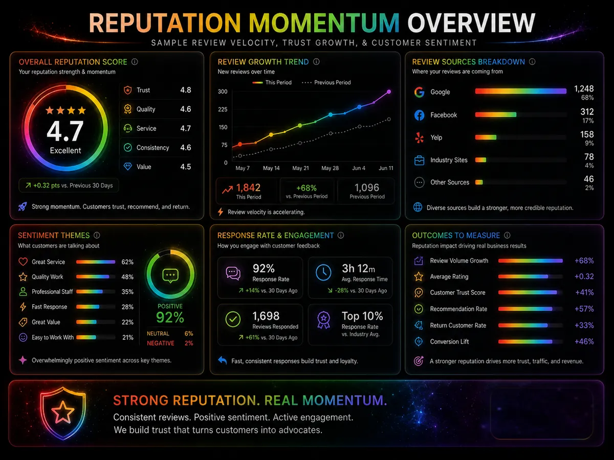
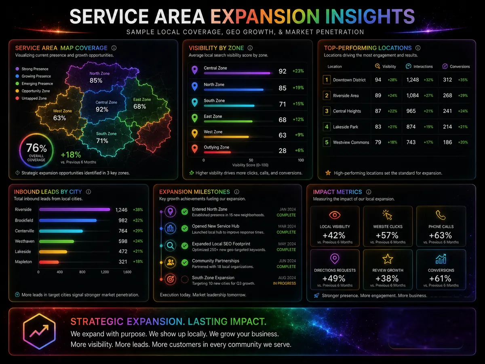
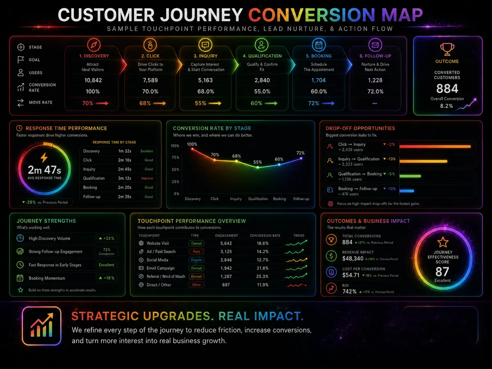

Avondale Local Marketing Map
A clear map for websites, reviews, CRM, and SEO content.
A clear map for websites, reviews, CRM, and SEO content.
A clear map for websites, reviews, CRM, and SEO content. The practical goal is not to publish noise. The goal is to make the business easier to understand, easier to trust, and easier to contact.
Most local growth problems are not one isolated issue. A weak page, stale proof, unclear service area, slow response, or missing follow-up step can break the chain. This article treats the topic as one part of a larger trust and conversion system.
A good SEO asset should help a real buyer make a decision, not merely give Google another URL to crawl.
Use this page as a reference article, a sales education asset, and an internal link target from related city, service, report, and case-study pages.
Approved local growth, reputation, booking, and service-area visuals are embedded into city, report, and playbook pages where they support the regional growth story.

Approved proof asset from the supplied production archive, placed here because it supports this page's public claim path.

Approved proof asset from the supplied production archive, placed here because it supports this page's public claim path.

Approved proof asset from the supplied production archive, placed here because it supports this page's public claim path.

Approved proof asset from the supplied production archive, placed here because it supports this page's public claim path.